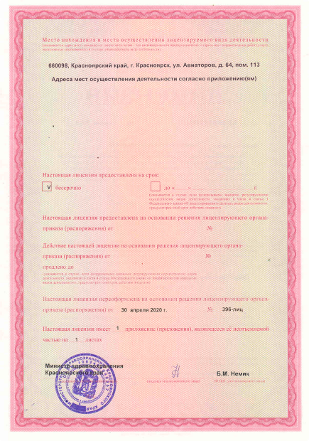
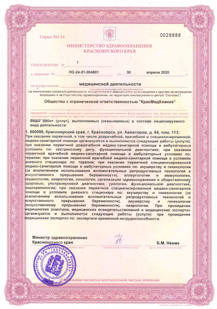

<div class="questions__content">
    <div class="questions__container">
        <div class="questions_title"><h1>ДОКУМЕНТАЦИЯ</h1></div>
        <div class="questions_list">
            <a id="01"></a>
            <a href="#01" class="link">
                <div class="question" id="test">
                    <div class="question__body">
                        <div class="question__number"><h1>01</h1></div>
                        <div class="question__text"><p>Лицензии</p></div>
                        <div class="question__expand">
                            
                        </div>
                        <div class="question__collapse">
                            
                        </div>
                    </div>
                    <div class="question__secondary">
                        <div class="question__line"></div>
                        <div class="question__clarification">
                            <ul>
                                <li>Мы входим в риестр медицинских организаций РФ.</li>
                                <li>У нас есть лицензия на прерывание беременности.</li>
                                <li>У нас есть лицензия на выдачу больничного электронного листа.</li>
                                <li>У нас есть лецензия оказания помощи в условиях дневного стационара.</li>
                                <li>У нас есть лецензия на ведение беременности.</li>
                            </ul>
                            <div class="sertificates">
                                <div class="item"></div>
                                <div class="item"></div>
                                <div class="item"></div>
                            </div>
                        </div>
                    </div>
                </div>
            </a>

            <a id="02"></a>
            <a href="#02" class="link">
                <div class="question">
                    <div class="question__body">
                        <div class="question__number"><h1>02</h1></div>
                        <div class="question__text"><p>Контролирующие органы</p></div>
                        <div class="question__expand">
                            
                        </div>
                        <div class="question__collapse">
                            
                        </div>
                    </div>
                    <div class="question__secondary">
                        <div class="question__line"></div>
                        <div class="question__clarification">
                            <div class="info__text">
                                <h1>1. Министерство здравоохранения Красноярского края</h1>
                                <p>Руководитель: Министр здравоохранения Красноярского края Немик Борис Маркович</p>
                                <p>Тел. 8 (391) 222-03-37</p>
                                <p>e-mail: office@kraszdrav.ru</p>
                                <p>Адрес: 660017, г. Красноярск, ул. Красной Армии, д.З</p>
                            </div>
                            <div class="info__text">
                                <h1>2. Территориальный орган Росздравнадзора по Красноярскому краю</h1>
                                <p>Руководитель: Деген Елена Валентиновна</p>
                                <p>Тел. 8 (391) 221-11-41</p>
                                <p>e-mail: info@reg24.roszdravnadzor.ru</p>
                                <p>Адрес: 660021, г. Красноярск, пр. Мира, д. 132</p>
                            </div>
                            <div class="info__text">
                                <h1>3. Управление Роспотребнадзора по Красноярскому краю</h1>
                                <p>Руководитель: Горяев Дмитрий Владимирович</p>
                                <p>Тел. 8 (391) 226-89-99</p>
                                <p>e-mail: info@24.rospotrebnadzor.ru</p>
                                <p>Адрес: 660097, г. Красноярск, ул. Каратанова, 21</p>
                            </div>
                            <div class="info__text">
                                <h1>4. Территориальный фонд обязательного медицинского страхования Красноярского края</h1>
                                <p>Руководитель: Директор Козаченко Сергей Витальевич</p>
                                <p>Тел. 8 (391) 256-69-01</p>
                                <p>e-mail: office@krasmed.ru</p>
                                <p>Адрес: 660021, г. Красноярск, ул. Копылова, д. 2Б</p>
                            </div>
                        </div>
                    </div>
                </div>
            </a>

            <a id="03"></a>
            <a href="#03" class="link">
                <div class="question">
                    <div class="question__body">
                        <div class="question__number"><h1>03</h1></div>
                        <div class="question__text"><p>Нормативно - правовые документы</p></div>
                        <div class="question__expand">
                            
                        </div>
                        <div class="question__collapse">
                            
                        </div>
                    </div>
                    <div class="question__secondary">
                        <div class="question__line"></div>
                        <div class="question__clarification">
                            <div class="title"><p>Федеральный закон No323-ФЗ от 21.11.2011 «Об основах охраны здоровья граждан в Российской Федерации», закон о защите прав потребителей</p></div>
                            <div class="title"><p>Закон Российской Федерации No2300-1от 07.02.1992«О защите прав потребителей»</p></div>
                            <div class="title"><p>Постановление Правительства Российской Федерации No1006от 04.10.2012«Об утверждении правил предоставления медицинскими организациями платных медицинских услуг»</p></div>
                        </div>
                    </div>
            </div>
            </a>

            <a id="04"></a>
            <a href="#04" class="link">
                <div class="question">
                    <div class="question__body">
                        <div class="question__number"><h1>04</h1></div>
                        <div class="question__text"><p>Информация об организации</p></div>
                        <div class="question__expand">
                            
                        </div>
                        <div class="question__collapse">
                            
                        </div>
                    </div>
                    <div class="question__secondary">
                        <div class="question__line"></div>
                        <div class="question__clarification">
                            <div class="title"><p>Общество с ограниченной ответственностью «КРАСМЕДКЛИНИК»</p></div>
                            <div class="title"><p>
                                660098, г Красноярск, ул. Авиаторов, д. 64, оф. 113<br>
                                ОГРН 1132468042431<br>
                                ИНН 2465296837<br>
                                КПП 246501001<br>
                                Филиал «Новосибирский» ОАО «Альфа-банк» г. Новосибирск<br>
                                БИК 045 004 774<br>
                                к/с 30101810600000000774<br>
                                р/с 40702810323270000818<br></p></div>
                            <div class="title"><p>Основной вид деятельности по ОКВЭД: 86.10.<br>
                                Дополнительные виды деятельности по ОКВЭД: 46.45; 46.46; 46.49; 47.73; 47.74; 47.75; 72.19; 82.99; 86.21; 86.90.9.</p></div>
                            <div class="title"><p>Директор: Штода Александр Анатольевич (действует на основании Устава)</p></div>
                            <div class="title"><p>Тел.: +7 (391) 292-72-35, +7 (391) 292-72-45<br>
                                krasmedklinik64@yandex.ru</p></div>
                            <div class="title"><p>График приема граждан руководителем организации: понедельник, среда, пятница с 17.00 до 20.00.<br>
                                Режим работы: понедельник-пятница с 09.00 до 21.00, суббота-воскресенье с 10.00 до 17.00, без обеда.</p></div>
                            <div class="title"><p>Дата государственной регистрации:  31.07.2013 г.</p></div>
                            <div class="title"><p>Государственный орган, зарегистрировавший создание юридического лица: Межрайонная инспекция Федеральной налоговой службы № 23 по Красноярскому краю, №2468</p></div>
                            <div class="title"><p>Органами управления общества являются: Общее собрание участников</p></div>
                            <div class="title"><p>Единоличный исполнительный орган общества: Директор</p></div>
                            <div class="title"><p>Учредитель: Штода Александр Анатольевич</p></div>
                        </div>
                    </div>
                </div>
            </a>

            <a id="05"></a>
            <a href="#05" class="link">
                <div class="question">
                    <div class="question__body">
                        <div class="question__number"><h1>05</h1></div>
                        <div class="question__text"><p>Обслуживание по ДМС</p></div>
                        <div class="question__expand">
                            
                        </div>
                        <div class="question__collapse">
                            
                        </div>
                    </div>
                    <div class="question__secondary">
                        <div class="question__line"></div>
                        <div class="question__clarification">
                            <div class="title"><p>Обслуживание по полису Добровольного медицинского страхования (ДМС)</p></div>
                            <div class="title"><p>Уважаемые пациенты!</p></div>
                            <div class="title"><p>В нашей Клинике созданы все условия для эффективного и комфортного лечения в рамках обслуживания по полисам добровольного медицинского страхования.</p></div>
                            <div class="title"><p>Мы гарантируем квалифицированную медицинскую помощь при возникновении страхового случая.</p></div>
                            <div class="title"><p>Обслуживание по полису добровольного медицинского страхования в Краевом лечебно диагностическом центре может включать, как амбулаторную помощь пациенту, так и широкий комплекс программ диагностического характера для пациента.</p></div>
                            <div class="title"><p>Что такое полис ДМС?</p></div>
                            <div class="title"><p>Добровольное медицинское страхование — один из самых востребованных видов страховой защиты в России, который с каждым годом привлекает все большое количество клиентов.</p></div>
                            <div class="title"><p>По полису ДМС его владелец получает медицинскую помощь, предусмотренную программой страхования в течение оговоренного срока в медицинских организациях, заключивших договор со страховой компанией.</p></div>
                            <div class="title"><p>Разные варианты страхования рассчитаны на разные потребности и уровни дохода.</p></div>
                            <div class="title"><p>В настоящее время ООО «КрасМедКлиник» сотрудничает с ведущими страховыми компаниями:</p></div>
                            <div class="title"><p>СПАО  «Ингосстрах»<br>
                                СПАО  «РЕСО – Гарантия»<br>
                                ПАО «Группа Ренессанс Страхование»<br>
                                САО  «Военно-страховая компания»<br>
                                ОАО  «АльфаСтрахование»<br>
                                ООО  «Бестдоктор» г.Москва»<br>
                            </p></div>
                            <div class="title"><p>Как работает полис ДМС?</p></div>
                            <div class="title"><p>Страховая компания берет на себя не только оплату медицинских услуг, но и защиту интересов пациента. К каждому владельцу полиса ДМС в страховой компании прикрепляется менеджер, занимающийся организационными вопросами.</p></div>
                            <div class="title"><p>Договор ДМС, как правило, заключается на один год. В нем указываются, наименования услуг и их количество в период действия полиса, а также компании, в которых может быть оказана медицинская помощь.</p></div>
                            <div class="title"><p>Что такое страховая программа?</p></div>
                            <div class="title"><p>Это очень важная часть страхового договора. Страховая программа определяет обязательный объем услуг, на которые вы можете рассчитывать как владелец полиса. Врачи ограничены в объеме медицинской помощи, которую они имеют право оказывать пациентам по полисам ДМС, договором со страховой компанией.</p></div>
                            <div class="title"><p>Работаем с любой страховой компанией при заключении договора гарантийного письма по системе ДМС. Приглашаем к сотрудничеству страховые компании.</p></div>
                        </div>
                    </div>
                </div>
            </a>

            <a id="06"></a>
            <a href="#06" class="link">
                <div class="question">
                    <div class="question__body">
                        <div class="question__number"><h1>06</h1></div>
                        <div class="question__text"><p>Политика конфиденциальности</p></div>
                        <div class="question__expand">
                            
                        </div>
                        <div class="question__collapse">
                            
                        </div>
                    </div>
                    <div class="question__secondary">
                        <div class="question__line"></div>
                        <div class="question__clarification">
                            <div class="title"><p>Политика конфиденциальности персональной информации (далее — Политика) действует в отношении всей информации, которую ООО «КРАСМЕДКЛИНИК» (далее — Оператор) может получить о Пользователе во время использования им веб-сайта.</p></div>
                            <div class="title"><p>Политика определяет, каким образом Оператор собирает, использует, хранит и раскрывает информацию, полученную от Пользователей на веб-сайте.</p></div>
                            <div class="title"><p>Использование веб-сайта означает безоговорочное согласие Пользователя с настоящей Политикой и указанными в ней условиями обработки его персональной информации; в случае несогласия с этими условиями Пользователь должен воздержаться от использования сайта.</p></div>
                            <ul class="deseable_list_style">
                                <li>1. Персональная информация Пользователей, которую обрабатывает Оператор</li>
                                    <ul>
                                        <li>1.1. В рамках настоящей Политики под «персональной информацией Пользователя» понимаются:</li>
                                            <ul>
                                                <li>1.1.1. Персональная информация, которую Пользователь предоставляет о себе самостоятельно в процессе использования веб-сайта, включая персональные данные Пользователя. Обязательная для предоставления информация помечена специальным образом. Иная информация предоставляется Пользователем на его усмотрение.</li>
                                                <li>1.1.2. Данные, которые автоматически передаются в процессе их использования с помощью установленного на устройстве Пользователя программного обеспечения, в том числе IP-адрес, данные файлов cookie, информация о браузере, технические характеристики оборудования и программного обеспечения, используемых Пользователем, дата и время доступа к веб-сайту и иная подобная информация.</li>
                                            </ul>
                                        <li>1.2. Настоящая Политика применима только к информации, обрабатываемой в ходе использования веб-сайта.</li>
                                        <li>1.3. Оператор не проверяет достоверность персональной информации, предоставляемой Пользователем, и не имеет возможности оценивать его дееспособность. Однако Оператор исходит из того, что пользователь предоставляет достоверную и достаточную персональную информацию и поддерживает эту информацию в актуальном состоянии.</li>
                                    </ul>
                                <li>2. Цели обработки персональной информации Пользователей</li>
                                    <ul>
                                        <li>2.1. Персональную информацию Пользователя Оператор обрабатывает в следующих целях:</li>
                                            <ul>
                                                <li>2.1.1. Связь с Пользователем, в том числе направление уведомлений, запросов и информации, касающихся использования веб-сайта, а также обработка запросов и заявок от Пользователя;</li>
                                                <li>2.1.2. Улучшение качества и удобство использования веб-сайта;</li>
                                                <li>2.1.3. Проведение статистических и иных исследований на основе обезличенных данных.</li>
                                            </ul>
                                    </ul>
                                <li>3. Обработка персональных данных Пользователей</li>
                                    <ul>
                                        <li>3.1. В отношении персональной информации Пользователя совершаются следующие действия: сбор, систематизация, накопление, хранение, уточнение (обновление, изменение), использование, передача (предоставление, доступ), блокирование, удаление, уничтожение, осуществляемых как с использованием средств автоматизации (автоматизированная обработка), так и без использования таких средств (неавтоматизированная обработка).</li>
                                    </ul>
                                <li>4. Условия обработки персональной информации Пользователей и её передачи третьим лицам</li>
                                    <ul>
                                        <li>4.1. В отношении персональной информации Пользователя сохраняется ее конфиденциальность, кроме случаев добровольного предоставления Пользователем информации о себе для общего доступа неограниченному кругу лиц.</li>
                                        <li>4.2. Оператор вправе передать персональную информацию Пользователя третьим лицам в следующих случаях:</li>
                                            <ul>
                                                <li>4.2.1. Пользователь выразил согласие на такие действия;</li>
                                                <li>4.2.2. Передача предусмотрена российским или иным применимым законодательством в рамках установленной законодательством процедуры;</li>
                                            </ul>
                                        <li>4.3. При обработке персональных данных Пользователей Оператор руководствуется Федеральным законом от 27 июля 2006 года № 152 «О персональных данных».</li>
                                    </ul>
                                <li>5. Изменение и удаление персональной информации. Обязательное хранение данных</li>
                                    <ul>
                                        <li>5.1. Пользователь может в любой момент изменить (обновить, дополнить) предоставленную им персональную информацию или её часть.</li>
                                        <li>5.2. Пользователь также может удалить предоставленную им персональную информацию, на основании письменного заявления.</li>
                                        <li>5.3. Права, предусмотренные пп. 5.1. и 5.2. настоящей Политики могут быть ограничены в соответствии с требованиями законодательства. В частности, такие ограничения могут предусматривать обязанность Оператора сохранить измененную или удаленную Пользователем информацию на срок, установленный законодательством, и передать такую информацию в соответствии с законодательно установленной процедурой государственному органу.</li>
                                    </ul>
                                <li>6. Обработка персональной информации при помощи файлов Cookie и счетчиков</li>
                                    <ul>
                                        <li>6.1. Файлы cookie, передаваемые Оператором оборудованию Пользователя и оборудованием Пользователя Оператору, могут использоваться Оператором для предоставления Пользователю в статистических и исследовательских целях, а также для улучшения веб-сайта Оператора.</li>
                                        <li>6.2. Пользователь осознает, что оборудование и программное обеспечение, используемые им для посещения веб-сайтов в сети интернет могут обладать функцией запрещения операций с файлами cookie (для любых веб-сайтов или для определенных веб-сайтов), а также удаления ранее полученных файлов cookie.</li>
                                        <li>6.3. Структура файла cookie, его содержание и технические параметры определяются Оператором и могут изменяться без предварительного уведомления Пользователя.</li>
                                        <li>6.4. Счетчики, размещенные Оператором, могут использоваться для анализа файлов cookie Пользователя, для сбора и обработки статистической информации, а также для обеспечения работоспособности веб-сайта в целом или его отдельных функций в частности. Технические параметры работы счетчиков определяются Оператором и могут изменяться без предварительного уведомления Пользователя.</li>
                                    </ul>
                                <li>7. Меры, применяемые для защиты персональной информации Пользователя</li>
                                    <ul>
                                        <li>7.1. Оператор принимает необходимые и достаточные организационные и технические меры для защиты персональной информации Пользователя от неправомерного или случайного доступа, уничтожения, изменения, блокирования, копирования, распространения, а также от иных неправомерных действий с ней третьих лиц.</li>
                                    </ul>
                                <li>8. Изменение Политики конфиденциальности. Применимое законодательство</li>
                                    <ul>
                                        <li>8.1. Оператор имеет право вносить изменения в настоящую Политику конфиденциальности. Действующая редакция постоянно доступна на веб-сайте.</li>
                                    </ul>
                                <li>9. Обратная связь. Вопросы и предложения</li>
                                    <ul>
                                        <li>9.1. Все предложения или вопросы по поводу настоящей Политики Пользователь вправе направлять в службу поддержки веб-сайта.</li>
                                    </ul>
                            </ul>
                        </div>
                    </div>
                </div>
            </a>

            <a id="07"></a>
            <a href="#07" class="link">
                <div class="question">
                    <div class="question__body">
                        <div class="question__number"><h1>07</h1></div>
                        <div class="question__text"><p>Правила внутреннего распорядка для пациентов</p></div>
                        <div class="question__expand">
                            
                        </div>
                        <div class="question__collapse">
                            
                        </div>
                    </div>
                    <div class="question__secondary">
                        <div class="question__line"></div>
                        <div class="question__clarification">
                            <div class="title"><p><span>Общие положения</span></p></div>
                            <div class="title"><p>1.1. Правила внутреннего распорядка для пациентов ООО «КрасМедКлиник» Краевого лечебно диагностического центра (далее – Правила) являются организационно-правовым документом, регламентирующим в соответствии с законодательством Российской Федерации в сфере здравоохранения, поведение пациента в клинике, а также иные вопросы, возникающие между пациентом (его представителем) и ООО «КрасМедКлиник» (Краевым лечебно диагностическим центром).</p></div>
                            <div class="title"><p>1.2. Настоящие Правила обязательны для всех пациентов, а также иных лиц, обратившихся в Клинику, разработаны в целях реализации предусмотренных законом прав пациента, создания наиболее благоприятных возможностей оказания пациенту своевременной медицинской помощи надлежащего объема и качества.</p></div>
                            <div class="title"><p>1.3. Правила внутреннего распорядка для пациентов включают:</p></div>
                            <div class="rules_for_patient">
                                <p>— порядок обращения пациента в Клинику;</p>
                                <p>— порядок оказания медицинской помощи пациенту;</p>
                                <p>— порядок предоставления информации о состоянии здоровья пациента;</p>
                                <p>— порядок выдачи справок, выписок из медицинской документации пациенту или другим лицам;</p>
                                <p>— график работы клиники и ее должностных лиц.</p>
                            </div>
                            <div class="title"><p>1.4. Правила внутреннего распорядка для пациентов размещаются на информационных стендах. Правила также размещаются на официальном сайте ООО «КрасМедКлиник»:</p></div>
                            <div class="title"><p>Порядок обращения пациентов в клинику</p></div>
                            <div class="title"><p>2.1. ООО«КрасМедКлиник»  является частным медицинским центром, оказывающей медицинские услуги на платной основе.</p></div>
                            <div class="title"><p>2.2. Для получения медицинской помощи пациент должен лично или по телефону обратиться к администратору клиники и записаться на прием к врачу или специалисту.</p></div>
                            <div class="title"><p>При состояниях, требующих срочного медицинского вмешательства (несчастный случай, травма, другие состояния и заболевания, угрожающие жизни или здоровью гражданина) пациенту необходимо обратиться в службу скорой медицинской помощи по телефону 03.</p></div>
                            <div class="title"><p>2.3. При записи на прием к врачу или специалисту пациент должен указать свою фамилию, имя, отчество, контактный номер телефона, а также информацию о том, обращался ли он в клинику ранее.</p></div>
                            <div class="title"><p>2.4. При невозможности посетить врача или специалиста в назначенное время необходимо отменить или перенести запись, позвонив администратору, как только выяснилась невозможность посещения.</p></div>
                            <div class="title"><p>2.5. Пациент должен посещать врача (специалиста) в соответствии со временем предварительной записи. При опоздании пациента на прием или процедуру более чем на 15 (пятнадцать) минут, врач (специалист) вправе  поменять очередность приема и принять другого пациента, передвинув время приема опоздавшего на более позднее.</p></div>
                            <div class="title"><p>2.6.  Медучреждение оставляет за собой право переноса сроков приема пациента по объективным причинам, о чем обязуется уведомить пациента (его представителя).</p></div>
                            <div class="title"><p>2.7. При первичном обращении в медицинский центр заполняется медицинская карта амбулаторного больного, в которую вносятся следующие сведения о пациенте: фамилия, имя, отчество, пол, дата рождения, адрес регистрации на основании документов, удостоверяющих личность. Также указываются контактные телефоны и e-mail и информация об источнике информации о клинике.</p></div>
                            <div class="title"><p>2.8. В соответствии с требованиями статьи 9 федерального закона «О персональных данных» от 27.07.2006 г. № 152-ФЗ пациент дает письменное согласие на обработку его персональных данных сотрудниками ООО «КрасМедКлиник».</p></div>
                            <div class="title"><p>2.9. В соответствии с требованиями Закона РФ «Об основах охраны здоровья граждан в Российской Федерации» с пациентом заключается Договор о предоставлении платной медицинской помощи, устанавливающий правовые отношения между пациентом и ООО «КрасМедКлиник».</p></div>
                            <div class="title"><p>2.10. Оплата услуг медицинского центра производится либо наличными денежными средствами в кассу центра, либо в безналичном порядке на расчетный счет ООО «КрасМедклиник». Расчеты наличными денежными средствами с персоналом центра (кроме администратора) строго запрещены.</p></div>
                            <div class="title"><p>2.11. Вся медицинская документация (медицинская карта, история болезни и пр.) является собственностью Клиники и хранится в соответствии с законодательством РФ.</p></div>
                            <div class="title"><p>2.12. Медицинская карта на руки пациенту не выдается, а переносится в кабинет администратором или медицинским работником. Не разрешается самовольный вынос медицинской карты из клиники без согласования с руководством ООО «КрасМедклиник».</p></div>
                            <div class="title"><p><span>Порядок оказания медицинской помощи пациенту</span></p></div>
                            <div class="title"><p>3.1. При обращении за медицинской помощью пациент дает свое письменное добровольное информированное согласие на медицинское вмешательство в соответствии с законодательством.</p></div>
                            <div class="title"><p>3.2. Пациент предоставляет врачу известную ему достоверную информацию о состоянии своего здоровья; направление на обследование, консультацию, лечение установленного образца (если направлялся другим врачом); первичную медицинскую документацию диагностических исследований (если проводились).</p></div>
                            <div class="title"><p>3.3. При нахождении в клинике пациент обязан придерживаться режима работы медучреждения, соблюдать тишину и порядок, соблюдать требования пожарной безопасности.</p></div>
                            <div class="title"><p>3.4. Курить в помещении клиники и на прилежащей к ней территории  КАТЕГОРИЧЕСКИ  ЗАПРЕЩЕНО.</p></div>
                            <div class="title"><p>Запрещено входить в служебные и технические помещения клиники. Недопустимо самостоятельно включать и регулировать любое инженерно-техническое оборудование.</p></div>
                            <div class="title"><p>3.5 Пациент обязан соблюдать санитарно-эпидемиологический режим (входить в клинику в сменной обуви или бахилах, верхнюю одежду оставлять в гардеробе).</p></div>
                            <div class="title"><p>3.6. Пациент должен уважительно относиться к медицинским работникам, участвующим в оказании медицинской помощи, а также проявлять доброжелательное и вежливое отношение к другим пациентам.</p></div>
                            <div class="title"><p>3.7. Дети в возрасте до 14 лет допускаются к обслуживанию в клинике согласно правилам, регламентированным Федеральным законом «Об основах охраны здоровья граждан в Российской Федерации»  (с изменениями и дополнениями).</p></div>
                            <div class="title"><p>Ответственность за безопасность жизни и здоровья несовершеннолетних лиц во время  их нахождения в клинике (включая детей старше 14 лет, находящихся в клинике без сопровождения взрослых), за информирование несовершеннолетних о Правилах  оказания услуг и соблюдения ими настоящих Правил, несут родители.</p></div>
                            <div class="title"><p>3.8. Пациент должен бережно относиться к имуществу клиники. При причинении ущерба имуществу клиники виновное лицо обязано по требованию ООО «КрасМедКлиник»  возместить либо стоимость ремонта поврежденного имущества (включая стоимость запасных частей), либо стоимость поврежденного имущества с учетом амортизационного износа.</p></div>
                            <div class="title"><p><span>Порядок выдачи справок, выписок из медицинской документации пациенту или другим лицам</span></p></div>
                            <div class="title"><p>4.1.Порядок выдачи документов, удостоверяющих временную нетрудоспособность больного, а также выписок из медицинской документации утверждается Министерством здравоохранения и социального развития Российской Федерации.</p></div>
                            <div class="title"><p>4.2. Документами, удостоверяющими временную нетрудоспособность больного, являются установленной формы листок нетрудоспособности или справка о временной нетрудоспособности (форма 095-у – для учащихся). Документы, удостоверяющие временную нетрудоспособность, а также выписки из медицинской документации выдаются лечащим врачом. Выдача и продление листка нетрудоспособности осуществляются в день обращения и после личного осмотра лечащим врачом; подтверждаются записью в амбулаторной карте, обосновывающей временное освобождение от работы. В случае заболевания учащихся, студентов средних, специальных и высших учебных заведений, сотрудников органов внутренних дел для освобождения от учебы, работы выдается справка установленной формы.</p></div>
                            <div class="title"><p>4.3. Листок нетрудоспособности выдается застрахованным лицам, являющимся гражданами РФ, а также постоянно  или временно проживающим на территории РФ иностранным гражданам и лицам без гражданства, указанным в статье 2 Федерального закона от 29.12.2006 № 255-ФЗ, при наличии документа, удостоверяющего личность.</p></div>
                            <div class="title"><p>4.4. За необоснованную выдачу, неправильное оформление листка нетрудоспособности (справки) лица, которым предоставлено право их выдачи, привлекаются к ответственности в установленном законодательством порядке.</p></div>
                            <div class="title"><p>4.5. Полученные пациентом листки нетрудоспособности и справки о временной нетрудоспособности должны быть заверены печатями установленного образца ответственным за выписку больничных листов в клинике.</p></div>
                            <div class="title"><p>4.6. В случае утери листка нетрудоспособности выдается дубликат после предоставления пациентом справки из бухгалтерии, что данный лист нетрудоспособности к оплате не поступал, и обязательного письменного разрешения главного врача клиники.</p></div>
                            <div class="title"><p>4.7. Если случай нетрудоспособности продолжается более 15 (пятнадцати) календарных дней, вопрос о продлении документов, подтверждающих временную нетрудоспособность, решается только после осмотра  врачебной комиссией (ВК).</p></div>
                            <div class="title"><p>4.8. В случае несогласия с решением лечащего врача об отказе в выдаче документа, подтверждающего нетрудоспособность, с диагнозом, тактикой лечения проводится комиссионный осмотр лечащим врачом и врачебной комиссией во главе с представителем ВК, после чего, в случае необходимости, принимается измененное решение.</p></div>
                            <div class="title"><p>4.9. Пациент имеет право непосредственно знакомиться с медицинской документацией, отражающей состояние его здоровья, и получать консультации о ней у других специалистов. По письменному заявлению пациента ему предоставляются копии медицинских документов (копии предоставляются по согласованному прайсу Клиники), отражающих состояние его здоровья, если в них не затрагиваются интересы третьей стороны.</p></div>
                            <div class="title"><p>4.10. Копии медицинских документов, справки о получении услуг клиники и выписки из медицинских карт предоставляются администрацией клиники в течение 10 (десяти) рабочих дней со дня, следующего за днем получения письменного заявления пациента</p></div>
                            <div class="title"><p><span>Порядок предоставления информации о состоянии здоровья пациента</span></p></div>
                            <div class="title"><p>5.1. При получении медицинской помощи пациент имеет право на получение полной информации о состоянии своего здоровья, применяемых методах диагностики и лечения, а также на выбор лиц, которым может быть передана информация о состоянии своего здоровья.</p></div>
                            <div class="title"><p>5.2. Информация о состоянии здоровья предоставляется пациенту в доступной, соответствующей требованиям медицинской этики. Она должна содержать сведения о результатах обследования, наличии заболевания, диагнозе и прогнозе, методах обследования и лечения, связанном с ними риске, возможных вариантах медицинского вмешательства и их последствиях, а также о результатах проведенного лечения и возможных осложнениях.</p></div>
                            <div class="title"><p>5.3. Информация о состоянии здоровья пациента не сообщается членам его семьи без письменного согласия об этом с назначением лица, которому должна быть передана такая информация.</p></div>
                            <div class="title"><p>5.4. В отношении лиц, признанных в установленном законом порядке недееспособными, информация о состоянии здоровья пациента предоставляется их законному представителю, на основании подтверждающих документов об установлении опеки.</p></div>
                            <div class="title"><p>5.5. В случае отказа пациента от получения информации о состоянии здоровья об этом делается соответствующая запись в медицинской документации.</p></div>
                            <div class="title"><p>5.6. Информация, содержащаяся в медицинской документации, составляет врачебную тайну и может предоставляться без согласия пациента только по основаниям, предусмотренным законодательством РФ.</p></div>
                            <div class="title"><p><span>График работы клиники и ее должностных лиц</span></p></div>
                            <div class="title"><p>6.1. График работы клиники, ее должностных лиц определяется Правилами внутреннего трудового распорядка ООО «КрасМедклиник».</p></div>
                            <div class="title"><p>6.2. Часы работы:</p></div>
                            <div class="title margin_left"><p>Будние дни: 8.00 — 21.00<br>
                                Суббота, воскресенье: 10.00 — 17.00
                            </p></div>
                            <div class="title"><p>6.3. График приема по личным вопросам:</p></div>
                            <div class="title margin_left"><p>Среда: 17.00 — 20.00</p></div>
                            <div class="title"><p>6.4 График работы бухгалтерии:</p></div>
                            <div class="title margin_left"><p>Будние дни: 10.00 — 18.00<br>
                                Суббота, воскресенье: выходные дни
                            </p></div>
                            <div class="title"><p>7.5. Администрация клиники вправе изменять график работы медучреждения, при условии размещения информации об изменении на информационных стендах клиники не менее чем за 7 (семь) дней до изменения.</p></div>
                            <div class="title"><p>7.6. При обращении за медицинской помощью и ее получении пациент имеет право обратиться в установленном медучреждением порядке с жалобой или предложением к должностным лицам клиники, а также к главному врачу или директору ООО «КрасМедКлиник».</p></div>
                            <div class="title"><p>7.7. Все жалобы и предложения пациентов принимаются в письменной форме установленного образца, регистрируются администратором и рассматриваются администрацией клиники в течение 10 (десяти) рабочих дней со дня, следующего за днем их получения.</p></div>
                            <div class="title"><p>7.8. Книга жалоб и предложений находится у администратора.</p></div>
                            <div class="title"><p>7.9. Прием пациентов директором или его заместителями осуществляется в установленные часы приема. Информацию о часах приема можно узнать у администратора.</p></div>
                            <div class="title"><p>Отношения между ООО «КрасМедКлиник» и пациентом (законным представителем) в части, не регулируемой настоящими Правилами, регламентированы действующим законодательством РФ.<br>
                                Посетители клиники, нарушившие данные Правила внутреннего распорядка, несут ответственность в соответствии с законодательством Российской Федерации. 
                            </p></div>
                        </div>
                    </div>
                </div>
            </a>

            <a id="08"></a>
            <a href="#08" class="link">
                <div class="question">
                    <div class="question__body">
                        <div class="question__number"><h1>08</h1></div>
                        <div class="question__text"><p>Обслуживание по ОМС</p></div>
                        <div class="question__expand">
                            
                        </div>
                        <div class="question__collapse">
                            
                        </div>
                    </div>
                    <div class="question__secondary">
                        <div class="question__line"></div>
                        <div class="question__clarification">
                            <div class="title"><p>Информация о возможности получения медицинской помощи в рамках программы государственных гарантий бесплатного оказания медицинской помощи гражданам</p></div>
                            <div class="title"><p>ООО « КрасМедклиник» информирует Вас о том, что все медицинские  услуги в нашей клинике оказываются платно и  в соответствии с требованиями Федерального закона «Об основах охраны здоровья граждан в Российской Федерации» от 21 ноября 2011 г. № 323-ФЗ напоминает Вам о возможности получения гарантированного объема бесплатной медицинской помощи в соответствии с Программой государственных гарантий бесплатного оказания гражданам Российской федерации медицинской помощи  и территориальной Программы  государственных гарантий бесплатного оказания гражданам Российской федерации медицинской помощи в Красноярском крае в любой медицинской организации,  участвующей  в Программе государственных гарантий.</p></div>
                            <div class="title"><p>Страховые медицинские организации осуществляющие деятельность в сфере обязательного медицинского страхования на территории Красноярского края.</p></div>
    
                            <div class="info__text">
                                <h1>ООО МСК «Медика-Восток»</h1>
                                <p>Полное наименование:	Общество с ограниченной ответственностью медицинская страховая компания «Медика-Восток»</p>
                                <p>Краткое наименование:	ООО МСК «Медика-Восток»</p>
                                <p>Реестровый номер:	24002</p>
                                <p>Адрес:	660093, г. Красноярск, ул. Кольцевая, д. 5, пом.70</p>
                                <p>Руководитель:	Фролова Галина Константиновна</p>
                                <p>КПП:	246601001</p>
                                <p>Тел.:	(391) 236-57-14</p>
                                <p>Факс:	(391) 236-57-14</p>
                                <p>E-mail:	secretary@mvostok.ru</p>
                                <p>Расписание работы:	пн-пт 8:00-18:00, без перерыва</p>
                                <p>Горячая линия:	8-800-350-99-50, 258-56-02</p>
                                <p>Cайт:	http://www.mvostok.ru/</p>
                                <p>Лицензия № ОС № 0660-01 от 22.09.15</p>
                            </div>
    
                            <div class="info__text">
                                <h1>ООО СК «ВТБ Страхование»</h1>
                                <p>Полное наименование:	Общество с ограниченной ответственностью Страховая компания «ВТБ Страхование»</p>
                                <p>Краткое наименование:	ООО СК «ВТБ Страхование»</p>
                                <p>Реестровый номер:	24004</p>
                                <p>Адрес:	660022, г. Красноярск, ул. Дубровинского, д. 110, офис 301</p>
                                <p>Руководитель:	Тасейко Лариса Иудовна</p>
                                <p>КПП:	246643001</p>
                                <p>Тел.:	(391) 205-05-51, 205-05-52</p>
                                <p>Факс:	(391) 205-05-51</p>
                                <p>E-mail:	krasnoyarsk-ms@yandex.ru</p>
                                <p>Расписание работы:	пн-чт 9:00-18:00, птн. с 9:00 до 17:00 без перерыва</p>
                                <p>Горячая линия:	8-800-100-00-51</p>
                                <p>Cайт:	http://www.rosno-ms.ru</p>
                                <p>Лицензия № ОС 2890-01 от 20.05.15</p>
                            </div>
    
                            <div class="info__text">
                                <h1>Красноярский филиал ООО СК «Капитал-полис Мед»</h1>
                                <p>Полное наименование:	Красноярский филиал Общества с ограниченной ответственностью Страховая компания «Капитал-полис Медицина»</p>
                                <p>Краткое наименование:	Красноярский филиал ООО СК «Капитал-полис Мед»</p>
                                <p>Реестровый номер:	24005</p>
                                <p>Адрес:	660017, г. Красноярск, ул.Ленина, д.122</p>
                                <p>Руководитель:	Кольба Вера Ивановна</p>
                                <p>КПП:	246602001</p>
                                <p>Тел.:	(391) 266-23-30</p>
                                <p>Факс:	(391) 211-15-64</p>
                                <p>E-mail:	jurist@kapitalpolismed.ru</p>
                                <p>Расписание работы:	пн-пт 8:30-17:30, технич. перерыв с 13-30 до 13-45, сб 10:00-15:00</p>
                                <p>Горячая линия:	8-800-350-11-99</p>
                                <p>Cайт:	oms-capitalpolis.ru</p>
                                <p>Лицензия № ОС 2875-01 от 28.01.15</p>
                            </div>
    
                            <div class="info__text">
                                <h1>Филиал ООО «СК «Ингосстрах-М» в г.Красноярске</h1>
                                <p>Полное наименование:	Филиал Общества с ограниченной ответственностью «Страховая компания «Ингосстрах-М» в г. Красноярске</p>
                                <p>Краткое наименование:	Филиал ООО «СК «Ингосстрах-М» в г.Красноярске</p>
                                <p>Реестровый номер:	24008</p>
                                <p>Адрес:	660014, г. Красноярск, пр. Красноярский рабочий, 60, пом. 69</p>
                                <p>Руководитель:	Орлова Алёна Юрьевна</p>
                                <p>КПП:	246643002</p>
                                <p>Тел.:	(391) 212-62-62</p>
                                <p>Факс:	(391) 212-62-62</p>
                                <p>E-mail:	ingoss-m@mail.ru</p>
                                <p>Расписание работы:	пн-т. 8:30-17:30, птн. 8:30- 16:30, без перерыва на обед</p>
                                <p>Горячая линия:	8-800-100-77-55</p>
                                <p>Cайт:	http://www.ingos-m.ru/</p>
                                <p>Лицензия № ОС № 3837-01 от 10.08.15</p>
                            </div>
    
                            <div class="info__text">
                                <h1>Филиал ЗАО СМК «Сибирский Спас-Мед» в г.Красноярске</h1>
                                <p>Полное наименование:	Филиал Закрытого акционерного общества страховая медицинская компания «Сибирский Спас-Мед» в городе Красноярске</p>
                                <p>Краткое наименование:	Филиал ЗАО СМК «Сибирский Спас-Мед» в г.Красноярске</p>
                                <p>Реестровый номер:	24009</p>
                                <p>Адрес:	660135, г. Красноярск, ул. Батурина, д. 5</p>
                                <p>Руководитель:	Чернядьева Наталья Юрьевна</p>
                                <p>КПП:	246643002</p>
                                <p>Тел.:	(391) 254-27-40</p>
                                <p>Факс:	(391) 254-27-40</p>
                                <p>E-mail:	krs@sibspas.ru</p>
                                <p>Расписание работы:	пн-пт 9:00-18:00, перерыв 13:00-14:00</p>
                                <p>Горячая линия:	8-800-200-23-63</p>
                                <p>Cайт:	http://sibspas.ru/med/</p>
                                <p>Лицензия № 3270-01 от 28.09.15</p>
                            </div>
    
                            <div class="title"><p>С информацией о порядке, об объеме и условиях оказания медицинской помощи в соотвествии с программой государственных гарантий бесплатного оказания гражданам медицинской помощи и территориальной программой государственных гарантий бесплатного оказания медицинской помощи можно познакомиться на сайте Территориального фонда медицинского страхования Красноярского края</p></div>
                            <div class="title"><p>Информацию о жизненно необходимых и важнейших лекарственных препаратов для медицинского применения, информацию о перечне лекарственных препаратов, отпускаемых населению в соответствии с Перечнем групп населения и категорий заболеваний, при амбулаторном лечении которых лекарственные средства и изделия медицинского назначения отпускаются по рецептам врачей бесплатно можно найти на сайте Министерства здравоохранения Красноярского края в разделе Лекарственное обеспечение</p></div>
                        </div>
                    </div>
                </div>
            </a>

            <a id="09"></a>
            <a href="#09" class="link">
                <div class="question">
                    <div class="question__body">
                        <div class="question__number"><h1>09</h1></div>
                        <div class="question__text"><p>Страховые медицинские организации</p></div>
                        <div class="question__expand">
                            
                        </div>
                        <div class="question__collapse">
                            
                        </div>
                    </div>
                    <div class="question__secondary">
                        <div class="question__line"></div>
                        <div class="question__clarification">
                            <div class="title"><p><span>Страховые медицинские организации осуществляющие деятельность в сфере обязательного медицинского страхования на территории Красноярского края.</span></p></div>
                            
                            <div class="info__text">
                                <h1>ООО МСК «Медика-Восток»</h1>
                                <p>Полное наименование:	Общество с ограниченной ответственностью медицинская страховая компания «Медика-Восток»</p>
                                <p>Краткое наименование:	ООО МСК «Медика-Восток»</p>
                                <p>Реестровый номер:	24002</p>
                                <p>Адрес:	660093, г. Красноярск, ул. Кольцевая, д. 5, пом.70</p>
                                <p>Руководитель:	Фролова Галина Константиновна</p>
                                <p>КПП:	246601001</p>
                                <p>Тел.:	(391) 236-57-14</p>
                                <p>Факс:	(391) 236-57-14</p>
                                <p>E-mail:	secretary@mvostok.ru</p>
                                <p>Расписание работы:	пн-пт 8:00-18:00, без перерыва</p>
                                <p>Горячая линия:	8-800-350-99-50, 258-56-02</p>
                                <p>Cайт:	http://www.mvostok.ru/</p>
                                <p>Лицензия № ОС № 0660-01 от 22.09.15</p>
                            </div>
    
                            <div class="info__text">
                                <h1>Филиал «Красноярск-РОСНО-МС» ОАО «РОСНО-МС»</h1>
                                <p>Полное наименование:	Филиал «Красноярск-РОСНО-МС» Открытого акционерного общества Страховая компания «РОСНО-МС»</p>
                                <p>Краткое наименование:	Филиал «Красноярск-РОСНО-МС» ОАО «РОСНО-МС»</p>
                                <p>Реестровый номер:	24004</p>
                                <p>Адрес:	660022, г. Красноярск, ул. Партизана Железняка, д. 6 А, пом. 9</p>
                                <p>Руководитель:	Тасейко Лариса Иудовна</p>
                                <p>КПП:	246643001</p>
                                <p>Тел.:	(391) 205-05-51, 205-05-52</p>
                                <p>Факс:	(391) 205-05-51</p>
                                <p>E-mail:	krasnoyarsk-ms@rosno.ru</p>
                                <p>Расписание работы:	пн-чт 9:00-18:00, птн. с 9:00 до 17:00 без перерыва</p>
                                <p>Горячая линия:	8-800-100-00-51</p>
                                <p>Cайт:	http://www.rosno-ms.ru</p>
                                <p>Лицензия № ОС 2890-01 от 20.05.15</p>
                            </div>
    
                            <div class="info__text">
                                <h1>Красноярский филиал ООО СК «Капитал-полис Мед»</h1>
                                <p>Полное наименование:	Красноярский филиал Общества с ограниченной ответственностью Страховая компания «Капитал-полис Медицина»</p>
                                <p>Краткое наименование:	Красноярский филиал ООО СК «Капитал-полис Мед»</p>
                                <p>Реестровый номер:	24005</p>
                                <p>Адрес:	660017, г. Красноярск, ул.Ленина, д.122</p>
                                <p>Руководитель:	Кольба Вера Ивановна</p>
                                <p>КПП:	246602001</p>
                                <p>Тел.:	(391) 266-23-30</p>
                                <p>Факс:	(391) 211-15-64</p>
                                <p>E-mail:	jurist@kapitalpolismed.ru</p>
                                <p>Расписание работы:	пн-пт 8:30-17:30, технич. перерыв с 13-30 до 13-45, сб 10:00-15:00</p>
                                <p>Горячая линия:	8-800-350-11-99</p>
                                <p>Cайт:	oms-capitalpolis.ru</p>
                                <p>Лицензия № ОС 2875-01 от 28.01.15</p>
                            </div>
    
                            <div class="info__text">
                                <h1>Филиал ООО «СК «Ингосстрах-М» в г.Красноярске</h1>
                                <p>Полное наименование:	Филиал Общества с ограниченной ответственностью «Страховая компания «Ингосстрах-М» в г. Красноярске</p>
                                <p>Краткое наименование:	Филиал ООО «СК «Ингосстрах-М» в г.Красноярске</p>
                                <p>Реестровый номер:	24008</p>
                                <p>Адрес:	660014, г. Красноярск, пр. Красноярский рабочий, 60, пом. 69</p>
                                <p>Руководитель:	Орлова Алёна Юрьевна</p>
                                <p>КПП:	246643002</p>
                                <p>Тел.:	(391) 212-62-62</p>
                                <p>Факс:	(391) 212-62-62</p>
                                <p>E-mail:	ingoss-m@mail.ru</p>
                                <p>Расписание работы:	пн-т. 8:30-17:30, птн. 8:30- 16:30, без перерыва на обед</p>
                                <p>Горячая линия:	8-800-100-77-55</p>
                                <p>Cайт:	http://www.ingos-m.ru/</p>
                                <p>Лицензия № ОС № 3837-01 от 10.08.15</p>
                            </div>
    
                            <div class="info__text">
                                <h1>Филиал ЗАО СМК «Сибирский Спас-Мед» в г.Красноярске</h1>
                                <p>Полное наименование:	Филиал Закрытого акционерного общества страховая медицинская компания «Сибирский Спас-Мед» в городе Красноярске</p>
                                <p>Краткое наименование:	Филиал ЗАО СМК «Сибирский Спас-Мед» в г.Красноярске</p>
                                <p>Реестровый номер:	24009</p>
                                <p>Адрес:	660135, г. Красноярск, ул. Батурина, д. 5</p>
                                <p>Руководитель:	Чернядьева Наталья Юрьевна</p>
                                <p>КПП:	246643002</p>
                                <p>Тел.:	(391) 254-27-40</p>
                                <p>Факс:	(391) 254-27-40</p>
                                <p>E-mail:	krs@sibspas.ru</p>
                                <p>Расписание работы:	пн-пт 9:00-18:00, перерыв 13:00-14:00</p>
                                <p>Горячая линия:	8-800-200-23-63</p>
                                <p>Cайт:	http://sibspas.ru/med/</p>
                                <p>Лицензия № 3270-01 от 28.09.15</p>
                            </div>
                        </div>
                    </div>
                </div>
            </a>

            <a id="10"></a>
            <a href="#10" class="link">
                <div class="question">
                    <div class="question__body">
                        <div class="question__number"><h1>10</h1></div>
                        <div class="question__text"><p>Правила подготовки к исследованиям</p></div>
                        <div class="question__expand">
                            
                        </div>
                        <div class="question__collapse">
                            
                        </div>
                    </div>
                    <div class="question__secondary">
                        <div class="question__line"></div>
                        <div class="question__clarification">
                            <div class="title"><p><span>Как подготовиться к УЗИ?</span></p></div>
                            <div class="title margin_left"><p>УЗИ брюшной полости, УЗИ внутренних органов, УЗИ сосудов портального региона, УЗИ аорты и ее ветвей, УЗИ сосудов почек:</p></div>
                            <div class="title"><p>Выполняется натощак (не есть, не пить в большом количестве, желательно также в течение 2 часов не курить и не жевать жвачку), если исследование выполняется с утра.</p></div>
                            <div class="title"><p>Если исследование выполняется во вторую половину дня, голодный промежуток должен составлять 6-8 часов для взрослого пациента, 3-6 часов для ребенка (для новорожденного 3 часа и больше для более старшего возраста).</p></div>
                            <div class="title margin_left"><p>УЗИ мочевыделительной системы:</p></div>
                            <div class="title"><p>Для исследования требуется наполненное состояние мочевого пузыря – для этого следует помочиться за такой промежуток времени перед исследованием, за который обычно достигается наполнение мочевого пузыря с возникновением желания помочиться. Пить жидкость специально для наполнения мочевого пузыря не нужно!</p></div>
                            <div class="title margin_left"><p>УЗИ молочных желез:</p></div>                                                                                        
                            <div class="title"><p>Выполняется на любой день менструального цикла.</p></div>
                            <div class="title margin_left"><p>УЗИ предстательной железы:</p></div>
                            <div class="title"><p>Для исследования требуется наполненное состояние мочевого пузыря – для этого следует помочиться за такой промежуток времени перед исследованием, за который обычно достигается наполнение мочевого пузыря с возникновением желания помочиться. Если за час до исследования позывов на мочеиспускание нет (ни малейших), то нужно выпить 1-2 стакана жидкости. Очистительную клизму делать не требуется!</p></div>
                            <div class="title"><p>Все остальные исследования специальной подготовки не требуют</p></div>
                            <div class="title"><p><span>Правила подготовки перед сдачей медицинских анализов</span></p></div>
                            <div class="title"><p>Желательно соблюдать правила при проведении биохимических, гормональных, гематологических тестов, комплексных иммунологических тестов, результаты зависимы от физиологического состояния человека. Время.</p></div>                                                                                        
                            <div class="title"><p>По возможности, рекомендуется сдавать кровь утром, в период с 8 до 12 часов, натощак (не менее 8 часов и не более 14 часов голода, питье – вода, в обычном режиме), накануне избегать пищевых перегрузок.</p></div>
                            <div class="title"><p>Прием лекарственных препаратов. Если вы принимаете какие-то лекарственные препараты, следует проконсультироваться с врачом по поводу целесообразности проведения исследования на фоне приёма препаратов или возможности отмены приёма препарата перед исследованием, длительность отмены определяется периодом выведения препарата из крови.</p></div>
                            <div class="title"><p>Алкоголь – исключить приём алкоголя накануне исследования. Курение — не курить минимально в течение 1 часа до исследования. Фаза менструального цикла у женщин- значима для ряда гормональных исследований, перед исследованием следует уточнить у врача оптимальные дни для взятия пробы для определения уровня ФСГ, ЛГ, пролактина, прогестерона, эстрадиола, 17-ОН-прогестерона, андростендиона.</p></div>
                            <div class="title"><p>Стрессы — исключить физические и эмоциональные стрессы накануне исследования. После прихода в медицинский центр рекомендуется отдохнуть (лучше — посидеть) 10-20 минут перед взятием проб крови. Физиопроцедуры. Нежелательно сдавать кровь для лабораторного исследования вскоре после физиотерапевтических процедур, инструментального обследования и других медицинских процедур.</p></div>
                            <div class="title"><p>После некоторых медицинских процедур (например, биопсия) следует отложить лабораторное обследование на несколько дней. При контроле лабораторных показателей в динамике рекомендуется проводить повторные исследования в одинаковых условиях: в одной лаборатории, сдавать кровь в одинаковое время суток и пр.</p></div>
                        </div>
                    </div>
                </div>
            </a>
        </div>
    </div>
</div>